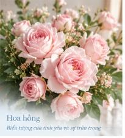
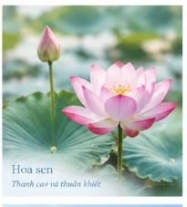
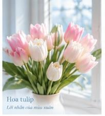
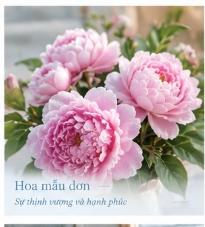

Tình yêuHoa và tình yêu: Ngôn ngữ không lời chạm đến trái tim
Từ những đóa hồng e ấp đến những chùm tulip dịu dàng, hoa đã đồng hành cùng con người qua muôn vàn cung bậc cảm xúc của sự gắn kết.
“Mỗi bông hoa đều có một câu chuyện.” Lắng nghe những nhịp đập thầm lặng của cỏ cây, văn hóa ngàn đời và sự chữa lành từ thiên nhiên thuần khiết.

Tình yêuTừ những đóa hồng e ấp đến những chùm tulip dịu dàng, hoa đã đồng hành cùng con người qua muôn vàn cung bậc cảm xúc của sự gắn kết.
 Ký ức
Ký ức
Có những mùi hương, những màu hoa vẫn luôn sống mãi trong ký ức, gợi nhắc về khoảng sân nhà thuở nhỏ và những người thân yêu.

Văn hóa Việt NamHoa sen, hoa đào, hoa mai, hoa cúc... không chỉ tô điểm cho nếp nhà người Việt mà còn mang đậm triết lý sống an hòa cùng tự nhiên.

Dịp đặc biệtMỗi sự kiện lớn nhỏ trong đời người từ ngày sinh nhật, tốt nghiệp đến ngày cưới đều trở nên thiêng liêng hơn khi có sự hiện diện của hoa tươi.

Nghệ thuậtTừ trường phái ấn tượng của Claude Monet đến tranh tĩnh vật hiện đại, hoa luôn là bậc thầy về sự hòa hợp giữa ánh sáng và tỷ lệ vàng.
Nghiên cứu thực nghiệm chứng minh việc ngắm nhìn và chăm sóc hoa mỗi ngày giúp hạ nhịp tim, xoa dịu âu lo và nuôi dưỡng lòng trắc ẩn.